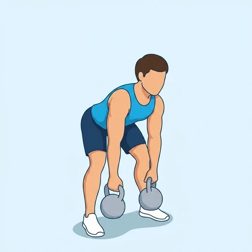

Double Kettlebell Dead Split Snatch
An Olympic-style kettlebell lift snatching two bells from the floor to overhead, caught in a split stance.
Full body · Kettlebell · Intermediate


Muscles worked by the Double Kettlebell Dead Split Snatch
Primary
Secondary
Also called: front deltoid, anterior delt, front delt, anterior deltoid, glute, glutes.
Equipment
Also called: kb, cast iron kettlebell, competition kettlebell, girya.
How to do the Double Kettlebell Dead Split Snatch
- Set two kettlebells on the floor between your feet.
- Hinge down and grip both handles firmly.
- Explosively pull the kettlebells overhead in one motion.
- Drop into a split stance to catch them at lockout.
- Recover by stepping feet back together.
Form tips
- Punch up through the handles to achieve a stable overhead lockout.
- Keep your front knee tracking over your foot in the split.
- Stay tall through your torso as you drop under the bells.
At a glance
| Body part | Full body |
|---|---|
| Category | Olympic |
| Force type | Dynamic |
| Mechanic | Compound |
| Difficulty | Intermediate |
| Equipment | Kettlebell |
| Goals | Power, Strength |
| MET | 8.0 (metabolic equivalent, for calorie estimates) |
| Unilateral | No |
| Bodyweight | No |
| Dataset id | double-kettlebell-dead-split-snatch |
Double Kettlebell Dead Split Snatch in German & Spanish
| German | Double Kettlebell Dead Split Snatch |
|---|---|
| Spanish | Dead Split Snatch con Dos Pesas Rusas |
Descriptions, instructions and tips ship in all three languages in the JSON.
Related exercises
Exercise data (JSON)
The record below is exactly what exercises.json ships for this exercise — names, descriptions, instructions and tips in English, German and Spanish.
{
"id": "double-kettlebell-dead-split-snatch",
"name_en": "Double Kettlebell Dead Split Snatch",
"name_de": "Double Kettlebell Dead Split Snatch",
"name_es": "Dead Split Snatch con Dos Pesas Rusas",
"description_en": "An Olympic-style kettlebell lift snatching two bells from the floor to overhead, caught in a split stance.",
"description_de": "Eine Snatch-Variante mit zwei Kettlebells, die vom Boden in einem Zug über Kopf gerissen und in der Split-Position abgefangen werden.",
"description_es": "Un snatch con dos pesas rusas desde el suelo que se recibe en posición de tijera con los brazos bloqueados arriba.",
"category": "olympic",
"force_type": "dynamic",
"mechanic": "compound",
"difficulty": "intermediate",
"equipment": "kettlebell",
"body_part": "full_body",
"primary_muscles": [
"anterior_deltoid",
"gluteus_maximus"
],
"secondary_muscles": [
"erector_spinae",
"hamstrings",
"quadriceps",
"trapezius"
],
"goals": [
"power",
"strength"
],
"variation_group": "snatch",
"is_unilateral": false,
"is_bodyweight": false,
"instructions_en": [
"Set two kettlebells on the floor between your feet.",
"Hinge down and grip both handles firmly.",
"Explosively pull the kettlebells overhead in one motion.",
"Drop into a split stance to catch them at lockout.",
"Recover by stepping feet back together."
],
"instructions_de": [
"Stelle zwei Kettlebells auf dem Boden zwischen deinen Füßen auf.",
"Beuge dich herunter und greife beide Griffe fest.",
"Ziehe die Kettlebells in einer Bewegung explosiv über den Kopf.",
"Gehe in einen Ausfallschritt, um sie im Lockout aufzufangen.",
"Kehre in die Ausgangsposition zurück, indem du die Füße wieder zusammenstellst."
],
"instructions_es": [
"Coloca dos pesas rusas en el suelo entre tus pies.",
"Inclínate y agarra ambas asas con firmeza.",
"Tira de las pesas rusas por encima de la cabeza de forma explosiva en un solo movimiento.",
"Cae en postura dividida para recibirlas con los brazos bloqueados.",
"Recupera la posición juntando los pies."
],
"tips_en": [
"Punch up through the handles to achieve a stable overhead lockout.",
"Keep your front knee tracking over your foot in the split.",
"Stay tall through your torso as you drop under the bells."
],
"tips_de": [
"Greife fest und spanne den Rumpf an, bevor du ziehst.",
"Stabilisiere den Stand im Split, erst dann richtest du dich auf.",
"Beginne mit leichten Kugeln, bis der Ablauf sicher sitzt."
],
"tips_es": [
"Practica la tijera sin peso hasta dominar la recepción.",
"Recibe con los codos completamente bloqueados.",
"Mantén el torso erguido al entrar en la tijera."
],
"met": 8.0,
"images": {
"flat": {
"start": "images/flat/double-kettlebell-dead-split-snatch-start.webp",
"peak": "images/flat/double-kettlebell-dead-split-snatch-peak.webp"
}
}
}Fetch just this exercise
const { exercises } = await fetch(
"https://exercise-dataset.com/exercises.json"
).then(r => r.json());
const ex = exercises.find(e => e.id === "double-kettlebell-dead-split-snatch");Free for personal and commercial in-app use with attribution (“Exercise data by RepDB”) — see the license and ready-made attribution snippets. Redistributing the data as a dataset or API is not permitted.